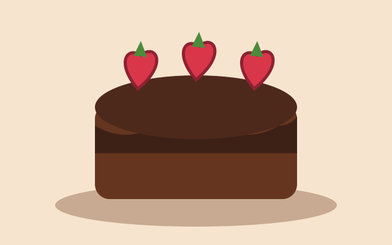
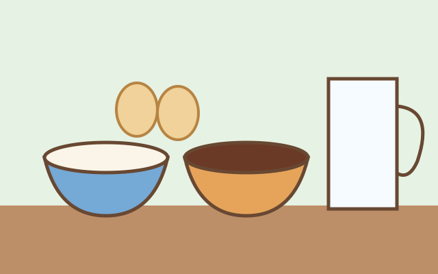
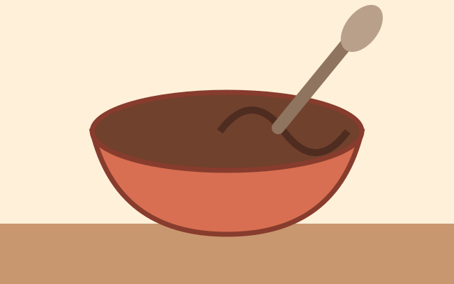
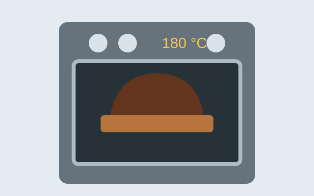
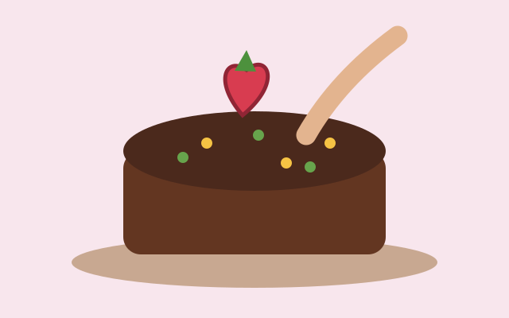

Etapa 1
Introdução
Neste tutorial, você aprenderá a fazer um bolo de chocolate simples e delicioso!

Etapa 2
Separe os ingredientes
- 2 xícaras de farinha de trigo
- 1 xícara de açúcar
- 1 xícara de chocolate em pó
- 1/2 xícara de óleo
- 4 ovos
- 1 colher de sopa de fermento em pó
- 1 xícara de leite

Etapa 3
Prepare a massa
Misture todos os ingredientes secos e, em seguida, adicione os molhados. Misture até ficar homogêneo.

Etapa 4
Asse o bolo
Despeje a massa em uma forma untada e asse em forno preaquecido a 180 °C por 30 minutos.
Atenção: peça ajuda a um adulto para usar o forno.

Etapa 5
Decore e sirva
Deixe esfriar, decore a gosto e aproveite!

Conteúdo complementar
Veja o preparo em vídeo
O elemento <iframe> incorpora na página um
vídeo hospedado em outro site.